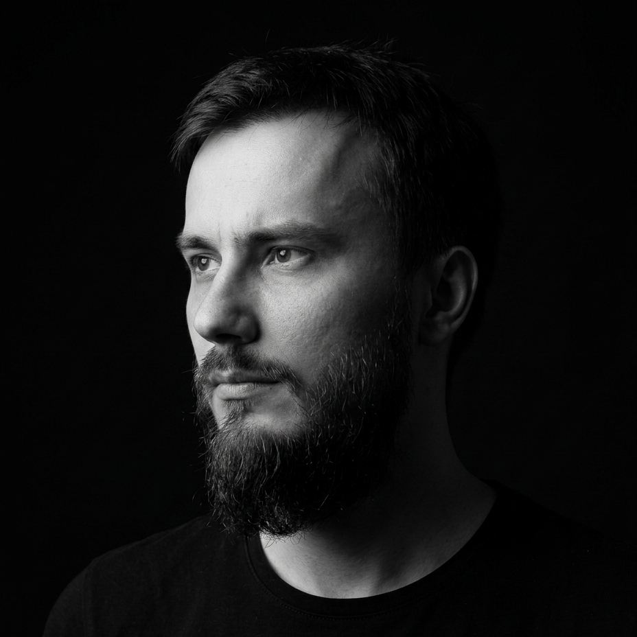

O mnie

Zajmuję się kartografią i analizami przestrzennymi. Zamieniam surowe dane geograficzne w czytelne, estetyczne mapy — zarówno interaktywne, jak i przygotowane do druku.
Tworzę rozwiązania GIS, które zamieniają dane przestrzenne w praktyczne informacje. Specjalizuję się w analizach przestrzennych, kartografii, automatyzacji procesów w ArcGIS Pro oraz programowaniu w Pythonie. Interesuje mnie wszystko, co pozwala lepiej analizować, wizualizować i wykorzystywać dane geograficzne – od klasycznych map po modele 3D i aplikacje webowe. Na tej stronie prezentuję swoje projekty oraz dzielę się wiedzą z zakresu geoinformatyki.